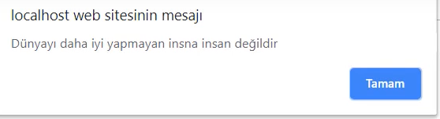
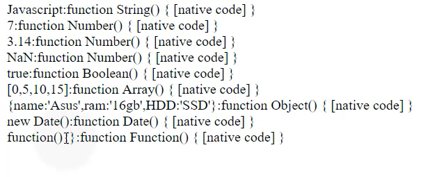
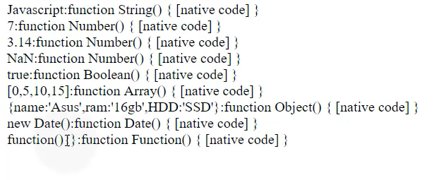

JavaScript'e giriş
Yazarak Alert verebilirsiniz
Her Tarayıcının kendine has alert ekranı vardır öğrenek
Kişinin JavaScript'i kapalı ise Bu kodu Yazarak Kişileri uyarı yapılabilir

Consolu kullanarak Visual Studio Code'da görünmeyen hataları bulmak veya consolun içinden JavaScript kodu deneye bilirsiniz


JavaScript ile HTML'e nasıl hükmederiz örnek

Şuan Aşağıda gösterilen örnek normalde yazılması gereken şekildedir.Üstteki yazım biçimi sadece tek seferlik kullanım için uygundur

JavaScript ile bir ışık yakıyor gibi bir fonksiyon yazalım


aslında burada olan şey JavaScript ile resimleri değiştirme.
Script kodları body'e de 'e de yerleştirilebilir örnek.


Çift tırnak içerisinde yazdığımız herşey birer metindir ve metinler String olarak betimlenir.


Kırmızı ile işaretlerdiğimiz satırların her biri birer statements'dır
Keyword= Description
break= Bir anahtarı veya döngüyü sonlandırır
continue= Bir döngüden atlar ve en üstten başlar
debugger= JavaScript'in yürütülmesini durdurur ve hata ayıklama işlevi (varsa) çağrır
do...while= Bir koşul geçerliyken, kod bloguğunu çalıştırır ve bloğu koşul geçersiz kalıncaya
kadar
tekrarlar.
for= Koşullar doğru olduğu sürece, yürütülecek kodlar bloğunu çalıştırır
function= Bir donksiyon bildirimi yapar
-JavaScript yorumları JavaScript kodunu açıklamak ve daha okunaklı hale getirmek için
-kullanılabilir.
-JavaScript yorumları, alternatif kodu test ederken yürütülmesini önlemek için de
kullanılabilir.
-Tek satırlı yorumlar // ile başlar.
-// ve satırın sonu arasındaki herhangi bir metin JavaScript tarafından yok sayılır (yürütülmez)
-Çok satırlı yorumlar /* ilebaşlar ver */ ile sona erer.
-/* ve */ arasındaki herhangi bir metin JavaScript tarafından yok sayılır.
-Yürütmeyi Engellemek için de yorumları kullanırız
-İsimler harf, rakam ,altçizgi ve dolar işaretleri içerebilir.
-İsimler bir harfle başlamalıdır
-İsimler ayrıca $ ve _ ile de başlatılabilir (ancak ben pek kullanmıyorum)
-İsimler büyük / küçük harf duyarlıdır (y ve Y farklı değişkenlerdir)
-Ayrılmış kelimeler (JavaScript anahtar kelimeleri gibi) isimler olarak kullanılmaz
(+) Addition (ekleme)
(-) Subtraction (Çıkarma)
(*) Multiplaication (Çarpma İşlemi)
(/) Division (Bölme işlemi)
(%) Modulus (Modül)
(++) Increment (Artırma)
(--) Decrement (Azaltma)
| Operator | = | += | -= | *= | /= | %= |
| Example | x=y | x+=y | x-=y | x*=y | x/=y | x%=y |
| Same As | x=y | x=x+y | x=x-y | x=x*y | x=x/y | x=x%y |
(+) Operatörü dizeleri eklemek (birleştirmek) için de kullanılır.
İki sayı eklemek, toplamı döndürür,ancak bir sayı ve bir string eklemek bir string döndürür
Operator Description
(==) equal to (eşittir)
(===) equal value and equal type (eşit değer ve eşit tür)
(!=) not equal (Eşit değil)
(!==) not equal value or not equal type (eşit olmayan değer ve eşit olmayan tür)
(>) greater than(-den daha büyük)
(küçüktür işareti) less than (-den daha küçük)
(>=) greater than or equal to (den daha büyük veya eşit)
(küçüktür işareti=) less than or equal to (den daha küçük ya da eşit)
(?) ternary operator (Üçlü operatör)
Operator Description
&& Logical and
|| Logical or
! Logical not

operator Description
typeof Bir değişkenin türünü döndürür
instanceof Bir nesne, bir nesne türünün örneğiyse true değerini döndürür.
1. String veri türü:
- Bir String (veya bir metin dizesi),"JavaScript" gibi bir dizi karakterdir
- Stringler tırnak ile yazılır. Tek veya çift tırnak işaretleri kullanıbilirsiniz
2.Sayılar için kullanılan veri türleri
- Tam sayılar için kullanılan veri türü number'dır
- Ondalıklı sayılar için veri türü number'dır
- Ekstra büyük veya ekstra küçük sayılar bilimsel (üstel) gösterimle yazılabilir

3. JavaScript Booleans veri türü
- Boolean'ların yalnızca iki değeri olabilir: true veya false.
- Boolean'lar sıklıkla koşullu ifadelerde kullanılır.
4. JavaScript Array'ler (Diziler)
- JavaScript dizileri köşeli ayraçlarla yazılmıştır.
- Array öğeleri virgüllerle ayrılır.
5. JavaScript Object
- JavaScript nesneleri kıvırcık parantezlerle yazılır.
- nesne özellikleri "isim:değer" çiftleri olarak virgülle ayrılmış olarak yazılır.
İlk Yöntem

İkinci yöntem

Celcius'a çevirme function'u

string ile nasıl çalıştığına bir örnek


Property Propery value
Type Nissan
Model 400a
color Black
ulaşma mantığı


Yıkarıdaki 5 kaçış karakteri başlangıçta daktilo, teleteksti ve faks makinesini kontrol etmek için tasarlandı. HTML'de herhangi bir mantıklı değiller
NaN'nın nasıl kullanılacağına bir örnek

Bölümün sonucunda sonsuz ifadesi nasıl olur bir örnek.
Birisi (+)Sonsuz değeri (-)Sonsuz değeri

Bölünme Sistemlerine bir kaç örnek


Bunlara birer örnek

| Method() | Number() | parseFloat() | parseInt() |
|---|---|---|---|
| Description | JavaScript değişkenlerini sayılara dönüştürmek için kullanılır | Bağımsız değişkeni ayrıştırır ve kayan noktalı (ondalılı) sayı verir | Bağımsız değikeni ayrıştırır ve bir tam sayı döndürür |

| Property() | MAX_VALUE() | MIN_VALUE() | NEGATIVE_INFINITY() | NaN() | POSITIVE_INFINITY() |
|---|---|---|---|---|---|
| Description | JavaScript'te mümkün olan en büyük sayıyı döndürür | JavaScript'te mümkün olan en küçük sayıyı döndürür | Negatif sonsuzluğu geri döndürür | "Not-a-Numbler" değerini gösterir | Pozitif sonsuzluğu geri döndürür |
| Method() | abs(x) | acos(x) | asin(x) | atan(x) | atan2(y,x) |
|---|---|---|---|---|---|
| Description | x değişken değerinin mutlak değerini döndürür | x'in arccosinusunu radyan cinsinden döndürür | x'in arcsinüsünü radyan cinsinden döndürür | -PI/2 ve PI /2 radyanları arasındaki sayısal bir değer olarak x'in arctanjantını döndürür | Bağımsız değişkenlerinin bölümünün arctanjantını döndürür |
Genellikle 4 çeşit JavaScript tarih giriş biçimi vardır
| Type() | ISO Date(x) | Short Date(x) | Long Date(x) | Full Date(x) |
|---|---|---|---|---|
| Example | "2018-11-15"(The International Standard) | "15/11/2018" | "Nov 15 2018" or " 15 Nov 2018" | "Saturday November 30 2017" |
getDate() Günü sayı olarak alır(1-31)
getDay() Haftanın gününü bir sayı olarak alır(0-6)
getFullYear() Dört haneli yılı alır (YYYY)
getHours() Saati alır(0-23)
getMilliseconds() Milisaniyeni alır (0-999)
getMinutes() Dakikaları alır (0-59)
getMounth() ayı alır(0-11)
getSeconds() Saniyeyi alır(0-59)
getTime() Zamanı al (1 Ocak 1970'ten itabaren)
setDate() günü bir sayı olarak ayarlayın
setFullYear() Yılın ayarlanması (isteğe bağlı olarak ay ve gün)
setHours() Saati ayarlamak için (0-23)
setMilliseconds() Milisaniyeyi ayarlamak için (0-999)
setMinutes() Dakikayı ayarlamak için (0-59)
setMonth() Ayı ayarlamak için(0-11)
setSeconds() Saniyeyi ayarlamak için (0-59)
setTime() Zamanı ayarlayın (1 Ocak 1970'den bu yana geçen mili saniye olarak)
var langs=new Array(); //Kötü kullanım
var langs=[]; // İyi kullanım
Nasıl sıralama yapabiceğimize karşı bir örner
== equal if(day=="Monday")
> greater than if(salary>9000)
küçüktür less than if (age18)
Karşılaştırmalara birer örnek


Bu karşılaştırmalar sadece String,Number türlerinde değil Boolean türünde'de karşılaştırma yapılabilir


Ders notu karşılaştırma

&& ve anlamına gelir ve tüm hepsi doğru olursa true döner yoksa false döner
|| ile herhangi bir tanesi bile doğru dönerse sonuç doğru olarak alınır örnek nezaman hepsi false döner ozaman false cevabı alırsınız

Değil bir işlemin değili'dir yani çıkan sonucun tersini almak lazım

Eğer iki satır gibi yani doğru yanlış türünde bir doğrulama kullanırken diğer karmaşık kod bloklarından kaçınmak için böyle yazılabilirimage.png

if else ile birden fazla if ve elese kullanıla bilir buna karşın bir örnek
Birden fazla koşul belirlemek için switch'leri kullanabiliriz örnek

Döngülerde bütün dizileri tek tek yazdırmak yerine (for ile bir döngü oluşturup tüm herşeyi bastırabiliriz)


Sayıları 3'er yazdırmak için kullanabilirsinizJS Ders 45 Algoritma Bilinci ve for in Loop

Çift sayıları yazdırmak için bu fonksiyonu kullanabailiriz

Tek sayıları yazdırmak için bu for'u kullanabiliriz bunuda (!) değildir işareti ile kolayca yapabiliriz

Unutmayın bir yerde tekrar varsa döngü vardır.
Bir yerde koşul varsa (if) tekrar varsa döngü kullanılır
faktör hesaplamak için bu for'u kullanabilirisiniz

Şimdiki örnek gibi yani (0) 10'dan hiç bir zaman büyük olmayacağı için bunu sürekli tekrarlıcak ve browser'ı çökertecektir ve kitlenecektir

Şuanki örnekte de 10 a kadar yazdıracak ve düzgün bir şekilde kod çalışacaktır


Bir array listesini yazdırırken belirli bir yerden sonrasını yazdırmak istemiyorsanız label kullana bilrisiniz onuda objelerin içerisinde kullanırsını

türlerin neye eşit olduğu ve ne sonuç döndürdüğüne dair bir örnek


constructor özelliği hangi türde ne kullandığımızı söyler örnek
 

+ operatörü var anahtar sözcüğüyle ile atama yapıldıktan sonra diğer bir değişkende eşittirden sonra çağrılırken + konursa onu number'a dönüştürür değişken bir string olsa bile

blooean'lar dönüştürülür mü evet true 1 false 0 olarak binary kodlama sistemine göre dönüştürür

tablo hali


Büyük / küçük harf duyarlı olmayan daha genel aramaları gerçekleştirmek için değiştiriciler kullanılabilir
Köşeli parantezler bir dizi karkter bulmak için kullınır
Meta karakterler özel bir anlam taşıyan karakterlerdir
Köşeli parantezler bir dizi karakter bulmak için kullanılır
bunlara birer örnek verelim
throw eğer ki bir inputu illaki doldurması zorunluysa kişinini kendi hata kodumuzu throw ile yapabiliriz
finally kodu ise input'ta bir click olayı yapıldığında inputu boşaltmak için kullanılabilir
Bu hata mesajlarına birer örnek
-IE version 10.
-Firefox version 4.
-Chrome version 13.
-Safari version 5.1.
-Opera version 12.

Harici script dosyası nasıl çağrılır örnek

JavaScript'te bu ayrılmış kelimeleri değişken, etiket veya fonksiyon adları olarak kullanamazsınız


JSON'lar nesnelere çok benzemektedir tek farkları JSON'lar çift tırnağa alınırlar.("")
Window nesneleri için bir kaç örnek
Nasıl yapılacağına dair kod blokları

screen.width
screen.height
screen.availWidht
screen.availHeight
screen.colorDepth
screen.pixedlDepth

Değerleri nasıl alırız çekeriz bir örnek


Bir onay formu nasıl yapılır bir örnek


validation mesajları

getElementsByName'ile birkaç örnekler


Ben kabarcıklanma olayıyım
Ben yakalama olayıyım